Introduction
Dans le jeu Dragon Ball Z Supersonic Warriors 2, il y a de nombreux personnages provenant de l'oeuvre Dragon Ball, cela s'étale de la Saga des Saiyans jusqu'à la Saga Boo en passant par certains films et passage clé de l'oeuvre.
Il y a 2 classes de personnages dans ce jeu:
Les personnages jouables et les personnages supports
Dans le jeu on dénombre exactement :


Débloquer chaque personnage
Pour pouvoir les débloquer les personnages il y a plusieurs méthodes:
Méthode n°1: Faire le Mode Histoire
Rien de plus simple pour les premiers joueurs que de simplement faire le mode histoire, qui est sensiblement simple et demande pas de déjà savoir jouer bien. On y apprend l'histoire de Dragon Ball, avec quelques What If sympathiques, même si parfois pour les débloquer c'est un peu compliqué, car pour des personnages comme Broly ou d'autres dans certains histoires il faut avoir débloquer des histoires alternatives. Mais dans l'ensemble, on peut débloquer la plupart des personnages sans trop de problèmes.
Méthode n°2: Faire le Mode Maximum
Pour ceux qui n'ont pas le temps ou qui savent déjà jouer, pour les plus aguerris en somme, il y a une méthode plus "directe" pour avoir les personnages, on peut s'attaquer directement au Mode Maximum, le mode de jeu le plus compliqué, en finissant le mode en plus d'avoir Majin Vegeta, l'un des personnages les plus forts du jeu,
on a la possibilité d'augmenter ses DP de manière drastique et d'également en avoir à l'infini si on arrive à battre les boss finaux. Ce sera peut être plus barbant, mais pour gagner les personnages qui sont les plus compliqués à obtenir, ce sera sans doute plus évident.
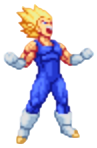
Voir ici
Tableau des méthodes pour débloquer les personnages
Personnages Jouables
| Personnage | Comment le débloquer dans le mode Histoire ? | Peut-on le débloquer ailleurs ? |
|---|---|---|
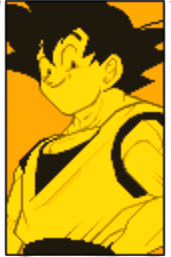 |
Disponible dés le début du jeu | Disponible dés le début du jeu |
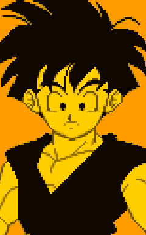 |
Disponible dés le début du jeu | Disponible dés le début du jeu |
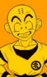 |
Disponible dés le début du jeu | Disponible dés le début du jeu |
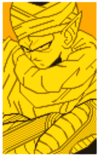 |
Disponible dés le début du jeu | Disponible dés le début du jeu |
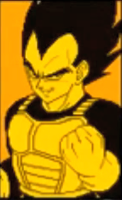 |
Disponible dés le début du jeu | Disponible dés le début du jeu |
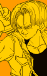 |
Disponible dés le début du jeu | Disponible dés le début du jeu |
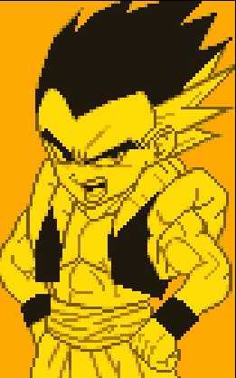 |
Disponible dés le début du jeu | Disponible dés le début du jeu |
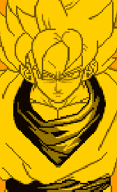 |
Déblocable dans le Mode Histoire de Goku après avoir fini l'Histoire What If 5 face à Metal Cooler | Déblocable dans le Mode Maximum après l'avoir fini |
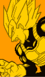 |
Déblocable dans l'histoire de Vegeta au niveau 3 face aux cyborgs | Déblocable dans le Mode Maximum après l'avoir fini |
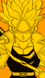 |
Déblocable dans le Mode Histoire de Trunks au niveau 1 | Déblocable dans le Mode Maximum après l'avoir fini |
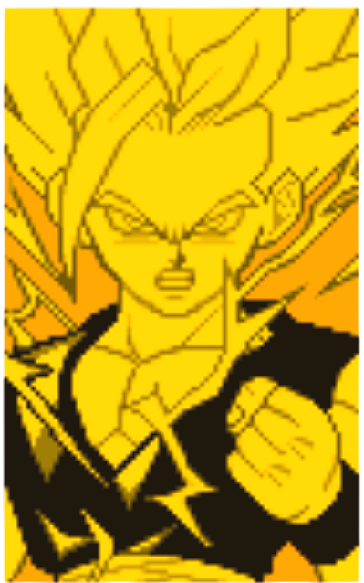 |
Déblocable dans le Mode Histoire de Gohan au niveau 2 | Déblocable dans le Mode Maximum après l'avoir fini |
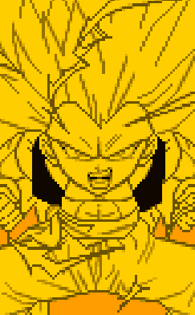 |
Déblocable dans le Mode Histoire de Gotenks au niveau 5 | Déblocable dans le Mode Maximum après l'avoir fini |
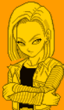 |
Disponible dés le début du jeu | Déblocable dans le Mode Maximum après l'avoir fini |
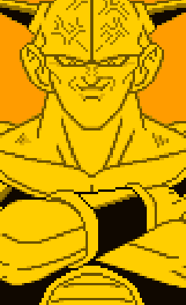 |
Déblocable dans le Mode Histoire de Vegeta au niveau 2 | Déblocable dans le Mode Maximum après l'avoir fini |
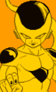 |
Déblocable dans le Mode Histoire de Goku au niveau 2 | Déblocable dans le Mode Maximum après l'avoir fini |
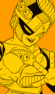 |
Déblocable dans le Mode Histoire de Freezer au niveau 5 | Déblocable dans le Mode Maximum après l'avoir fini | 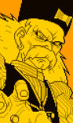 |
Déblocable dans le Mode Histoire de Gohan après avoir terminé l'Histoire What If 3 | Déblocable dans le Mode Maximum après l'avoir fini | 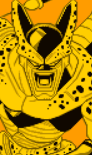 |
Déblocable dans le Mode Histoire de Dr Gero après avoir terminé l'Histoire What If 5 | Déblocable dans le Mode Maximum après l'avoir fini | 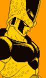 |
Déblocable dans le Mode Histoire de Cell | Déblocable dans le Mode Maximum après l'avoir fini | 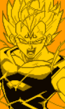 |
Impossible à débloquer dans le Mode Histoire | Déblocable uniquement dans le Mode Maximum après l'avoir fini en entier.
Quand on sélectionne Vegeta (Super Saiyan) appuyez sur R + A Pour le jouer uniquement, sélectionnez dans cet ordre :Babidi, Vegeta (Super Saiyan) et Goku (Super Saiyan) |
Déblocable dans le Mode Histoire de Gotenks après avoir terminé la 2e Histoire What If | Déblocable dans le Mode Maximum après l'avoir fini | 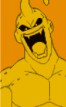 |
Déblocable dans le Mode Histoire de Boo | Déblocable dans le Mode Maximum après l'avoir fini | 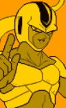 |
Déblocable dans le Mode Histoire de Freezer après avoir terminé la 2e Histoire What If | Déblocable dans le Mode Maximum après l'avoir fini |
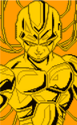 |
Déblocable dans le Mode Histoire de Cooler au niveau 3 | Déblocable dans le Mode Maximum après l'avoir fini |
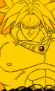 |
Déblocable dans le Mode Histoire de Goku après avoir terminé la 1ere Histoire What If 1 | Déblocable dans le Mode Maximum après l'avoir fini |
Personnages Supports
| Personnage | Comment le débloquer dans le mode Histoire ? | Peut-on le débloquer ailleurs ? |
|---|---|---|
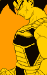 |
Déblocable dans le Mode Histoire de Goku après avoir terminé la 4eme Histoire What If 1 | Déblocable dans le Mode Maximum après l'avoir fini |
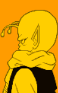 |
Déblocable dans le Mode Histoire de Piccolo après avoir terminé la 3eme Histoire What If 1 | Déblocable dans le Mode Maximum après l'avoir fini |
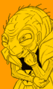 |
Déblocable dans le Mode Histoire de Vegeta au niveau 5 | Déblocable dans le Mode Maximum après l'avoir fini |
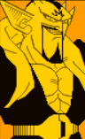 |
Déblocable dans le Mode Histoire de Boo après avoir terminé la 2eme Histoire What If 1 | Déblocable dans le Mode Maximum après l'avoir fini |
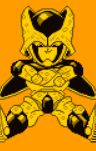 |
Déblocable dans le Mode Histoire de Cell après avoir terminé la 1ere Histoire What If 1 | Déblocable dans le Mode Maximum après l'avoir fini |
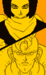 |
Déblocable dans le Mode Histoire de C-18 après avoir terminé la 3eme Histoire What If 1 | Déblocable dans le Mode Maximum après l'avoir fini |
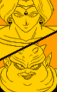 |
Déblocable dans le Mode Histoire de Freezer au niveau 1 | Déblocable dans le Mode Maximum après l'avoir fini |
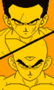 |
Déblocable dans le Mode Histoire de Krilin après avoir terminé la 1ere Histoire What If 1 | Déblocable dans le Mode Maximum après l'avoir fini |
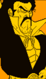 |
Déblocable dans le Mode Histoire de Boo au niveau 3 après avoir battu Gotenks avec un Perfect | Déblocable dans le Mode Maximum après l'avoir fini |
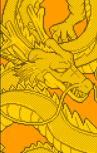 |
Déblocable dans le Mode Histoire de Ginyu après avoir terminé la 6eme Histoire What If 1 | Déblocable dans le Mode Maximum après l'avoir fini |
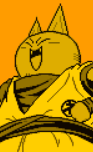 |
Déblocable uniquement sur la version Japonaise il faut:
|
Aucune autre méthode existante |
Pour plus d'informations
Pour voir en détail les personnages vous pouvez aller ici 
Pour voir en détail l'histoire de chaque personnage du jeu, vous pouvez aller ici